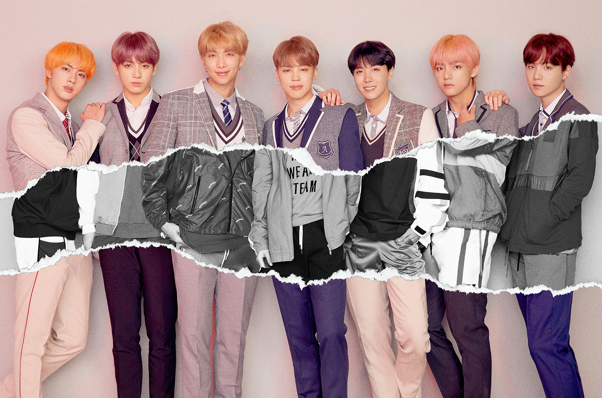
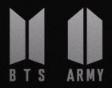

BTS ‧ 防彈少年團
韓國男子音樂團體，由 Jin、SUGA、j-hope、RM、Jimin、V、Jung Kook 七名成員組成，隸屬 Big Hit 娛樂經紀公司旗下，為 Big Hit 娛樂第一個獨立製作培養的團體。
▲ 團名由來：
剛出道時，防彈少年團的涵義為「阻擋像子彈一樣的批評與時代偏見的音樂團體」。
2017年7月4日加入了「不安於現狀，朝著夢想不斷成長的青春」的涵義，原先以「防彈少年團」為英文縮寫的「BTS」（BangTan Sonyeon Dan），也增添了「Beyond The Scene」超越現狀的意思。
▲ 歌迷名稱：
防彈少年團的官方歌迷名稱為「A.R.M.Y」（韓語：아미），這個名稱是在2013年7月9日通過官方網站首度亮相，由防彈少年團的成員們閱讀約1000個粉絲意見後親自選出。來自於英文「Adorable Representative M.C for Youth」的縮寫，意指「值得人們景仰的饒舌青年代表」。
ARMY在英語裏的意思是軍隊，而防彈衣和軍隊總是在一起，所以也有粉絲們和防彈少年團一直在一起的意思。
▲ 品牌識別：

防彈少年團的品牌識別以精簡的圖像呈現防彈少年團與歌迷A.R.M.Y共生、一體兩面的意義，並賦予了「BTS」一個新的定義「Beyond The Scene」，全新的Logo，形似門扇的圖案，像門一樣開啟，門背後的是未來、成年的世界，象徵防彈少年團是不耽溺於現狀、決定推開門到外面的世界成長的青年；而門扉映射出A.R.M.Y，則象徵青春的每個瞬間，再結合防彈少年團的Logo則形似護盾，意指與歌迷是共生的，當兩者分開，是誰也保護不了誰。
資料來源：維基百科/團員資料